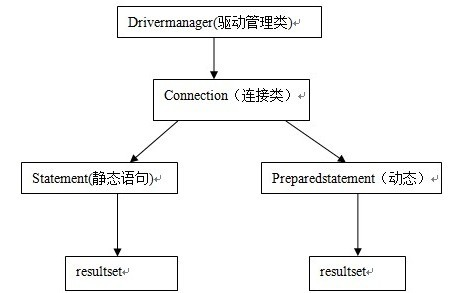

问题场景:
最近测试人员在测对角街项目的时候,发现登录模块经常死掉。
问题解决:
问题的表面现象是登录模块的问题，但是我的第一直觉感觉是底层架构的某个问题，
通过tail -f catalina.out，查看系统日志:
transaction completed on session with on_close connection release mode; be sure to close the session to release JDBC resources!
大概的原因是:jdbc资源没有被释放掉。
于是查看相关资料,发现:
使用Hibernate時，大家一般都記住了配置基本的那些選項，比如方言，緩存等，但是有一項配置卻很容易忘掉，
這就是连接释放模式：hibernate.connection.release_mode:可有三個选择，
1).on_close:如果不配置的话默认是on_close，那么如果沒有显示的去调用session.close或其它关闭连接的方法的話，这个连接是不会被关闭的！
在用到连接池的時候，这就更会出现问题了：池中的连接一直存在着而不会被关闭和回收！
2).after_transaction - 在org.hibernate.Transaction结束后释放连接。(由于连接池不会显示的调用session.close(),用这个)
3).after_statement (也被称做积极释放),在每一条语句被执行后就释放连接。但假若语句留下了与session相关的资源，那就不会被释放。
目前唯一的这种情形就是使用org.hibernate.ScrollableResults。
java数据源连接方式总结:
概述:java.sql提供了一些接口和类，用于支持数据库增删改查等相关的操作。该jar包定义了java访问各种不同数据库(mysql，oracle，sqlserver等)的
统一接口和标准。同时，各个数据库厂商都提供了该jar包中定义的各个接口的实现类，用于具体实现本厂数据库的增删改查操作，
即称之为“数据库驱动jdbc driver”。例如mysql的数据库驱动为：com.mysql.jdbc.driver；oracle的数据库驱动为：oracle.jdbc.driver.oracledriver。
一、原始的jdbc连接方式,使用java.sql API,利用该包提供的各种接口和类直接访问数据库。

模拟代码:
Class.forName("com.mysql.jdbc.Driver");
String url="jdbc:mysql://localhost:3306/editortest";
String user="root";
String password="123456";
Connection cn=DriverManager.getConnection(url, user, password);
Statement st=cn.createStatement();
String sql="select * from artical where id=1";
ResultSet rs=st.executeQuery(sql);
while(rs.next()){
System.out.println("1:"+rs.getString(1));
System.out.println("2:"+rs.getString(2));
System.out.println("3:"+rs.getString(3));
System.out.println("4:"+rs.getString(4));
}
与spring结合起来使用:(备注:DriverManagerDataSource在DriverManager上进行了封装,但是仍然没有提供连接池的功能)
二、连接池
1).连接池可以解决的问题:(不用每次都new，用了放在池子里)
当使用java.sql中提供的api创建数据库连接时候，需要耗费很大的资源，要进行用户名密码数据库连接验证等，即耗费资源也耗费时间。
如果在程序中，每次需要访问数据库时候，都进行数据库连接，那么势必会造成性能低下；同时，如果用户失误忘记释放数据库连接，
会导致资源的浪费等。而数据库连接池就是解决该问题，通过管理连接池中的多个连接对象（connection），实现connection重复利用。
从而，大大提高了数据库连接方面的性能。
2).连接池的功能:
负责创建，管理，释放，分配数据库连接即（connection）。首先，负责创建相应数目的数据库连接对象（connection）对象，
并存放到数据库连接池（connect pool）中。当用户请求数据库连接时，该连接池负责分配某个处于空闲状态的数据库连接对象；
当用户发出释放该数据库连接时，该连接池负责将该连接对象重新设置为空闲状态，以便被别的请求重复利用。
同时；数据库连接池负责检查（空闲时间>最大空闲时间）的数据库连接，并释放。
3).主要参数
最小连接数：初始化时，系统将负责创建该数目的connection放入连接池中。
最大连接数：系统允许创建connection的最大数值。当系统请求连接时候，且连接池中不存在空闲的连接：
如果connection总数未超过最大连接数，那么连接池负责创建新的connection对象，并返回该对象；
如果connection总数已经到达该最大连接数，那么连接池将用户请求转入等待队列。
4).常使用的连接池举例
A:jndi,该数据源是由相应的web服务器（例如：tomcat,weblogic,websphere）负责初始化，创建，管理。程序中不需要引入特别的jar包。
模拟代码:
Context initcontext=new InitialContext();
Context context=(Context) initcontext.lookup("java:comp/env");
DataSource datasource=(DataSource)context.lookup("jdbc/editortest");
Connection cn=datasource.getConnection();
Statement st=cn.createStatement();
String sql="select * from artical where id=1";
ResultSet rs=st.executeQuery(sql);
while(rs.next()){
System.out.println("1:"+rs.getString(1));
System.out.println("2:"+rs.getString(2));
System.out.println("3:"+rs.getString(3));
System.out.println("4:"+rs.getString(4));
}
与spring结合起来使用
B:DBCP方式，是apache提供的数据源连接池方式，支持数据库连接池创建，管理connection等功能。
使用环境，需要导入commons-dbcp.jar 和 commons-pool.jar两个jar包。
上面提到的JNDI方式，其实质实用的就是dbcp数据源；只是他是通过在web服务器上做配置，由web服务器负责创建该数据源。
与spring结合起来使用
C:C3p0[仅限了解]
C3P0是开源的数据库连接组件，支持创建数据库连接池，管理connection等功能。使用该种方式做数据库连接时候，需要导入c3p0-0.9.1.2.jar。
同时，关于数据库连接的具体参数，例如：url，username，password，最小连接数，最大连接数等信息既可以在xml配置文件中配置，
也可以通过程序编码方式创建。Spring支持c3p0的数据库连接池方式，因此在spring环境中使用时，支持在applicationcontext.xml文件中配置。
另外，由于数据库连接池在整个project中针对某个数据库而言是单例的，
所以，即使通过编码的方式创建，那么要保证其单实例特性。如果存在多个，那么必然会导致性能低下。
D:BoneCP[仅限了解]
BoneCP是快速高效的数据库连接池组件，据说性能上目前是最好得，比C3P0和DBCP快25倍。
使用该组件，需要导入bonecp-0.6.5.jar，google-collections-1.0.jar，slf4j-api-1.5.11.jar，slf4j-log4j12-1.5.11.jar，log4j-1.2.15.jar。